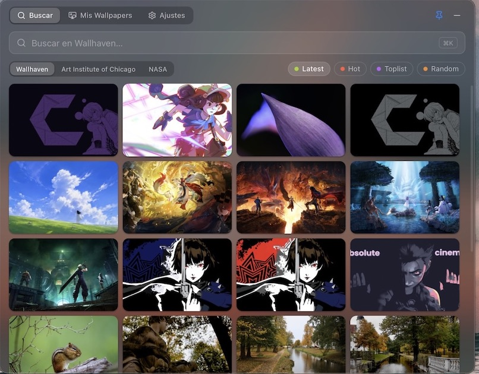
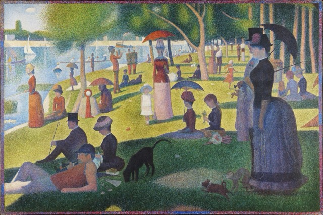
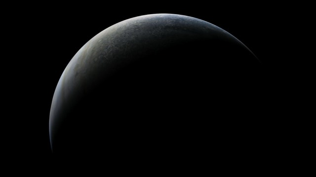
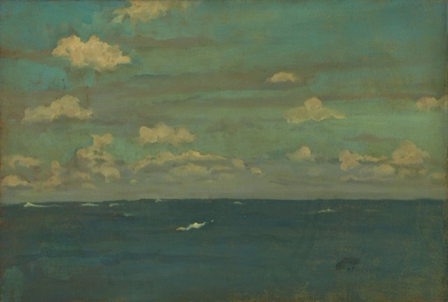
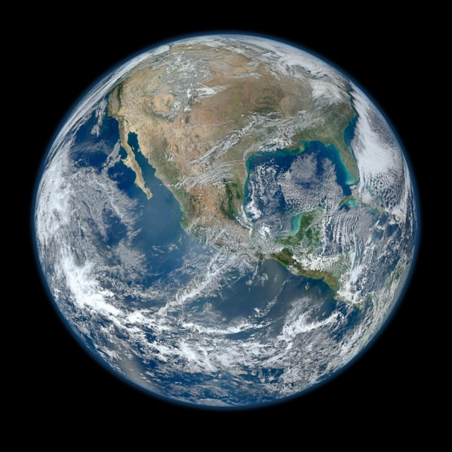
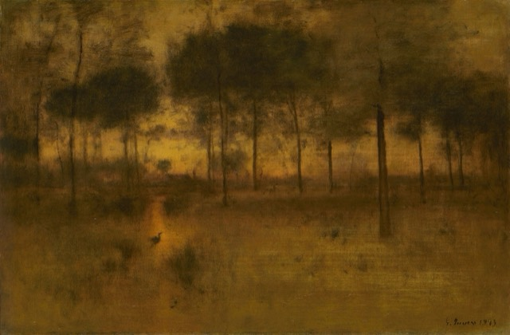
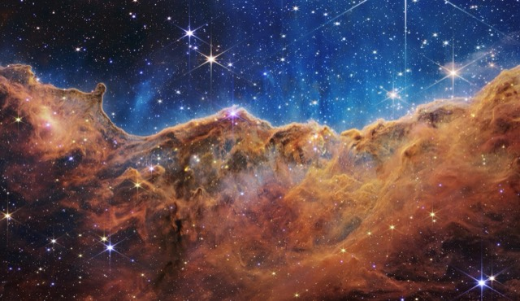
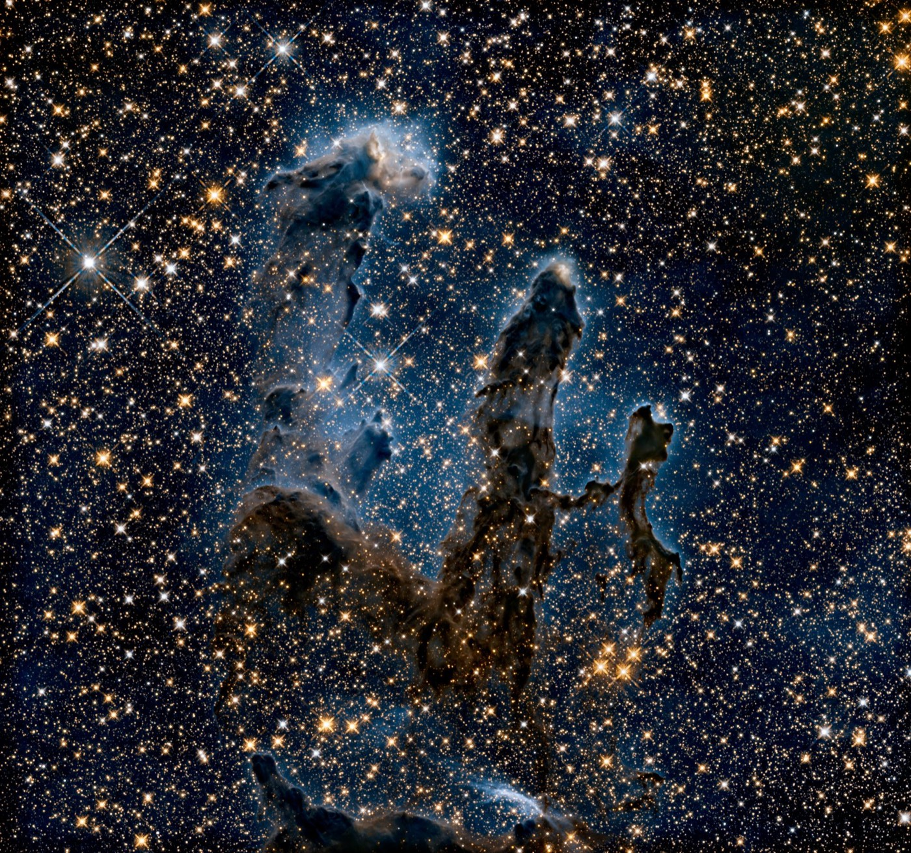

NASA
Hubble, James Webb, nebulosas, galaxias y la Tierra vista desde el espacio.
Wallflow vive en la barra de menú de tu Mac y trae wallpapers de Wallhaven, el Art Institute of Chicago y la NASA.







Cambia de fuente con un selector. Wallflow recuerda la última que usaste.
Hubble, James Webb, nebulosas, galaxias y la Tierra vista desde el espacio.
Pinturas y grabados de dominio público, de Hokusai a Seurat.
Miles de wallpapers de la comunidad, ordenados como prefieras.
Características
Un clic en el ícono abre la ventana. Se oculta sola al hacer clic fuera, o fíjala con el pin.
Sin búsqueda ves lo mejor de cada fuente: Hot o Toplist en Wallhaven, Hubble o James Webb en NASA.
Descarta verticales y baja resolución. En Wallhaven puedes filtrar por la resolución de tu pantalla.
Pasa el mouse sobre una imagen para aplicarla, guardarla o verla en grande, con su autor y fuente.
Recorre los resultados en grande con las flechas, junto a su autor, fuente y licencia.
Todo lo que aplicas o guardas queda en ~/Wallflow/Wallpapers, disponible sin conexión.
Mira cuánto ocupan tus wallpapers guardados y libera espacio con un clic.
Fondo translúcido y tema claro u oscuro según el sistema.
Prueba aquí mismo: presiona ⌘ K, las flechas, Esc o Tab.
Ir a la búsqueda
Imagen anterior o siguiente
Cerrar la vista completa
Moverte entre controles
Wallflow es un proyecto personal sin registro en Apple, así que la primera vez macOS te pide confirmar que quieres abrirlo.
¿Prefieres la Terminal? Este comando reemplaza los pasos 2 y 3:
xattr -cr /Applications/Wallflow.app
Abre Wallflow.dmg y arrastra Wallflow a la carpeta Aplicaciones.
macOS dirá que no puede verificar la app. Haz clic en Listo.
En Ajustes del Sistema → Privacidad y seguridad, haz clic en Abrir igualmente junto al aviso de Wallflow.
El ícono aparece en la barra de menú. Desde ahí se abre con normalidad.
Preguntas frecuentes
Nada. Wallflow es gratis y su código está en GitHub.
Cualquier Mac con macOS 11 (Big Sur) o superior. Funciona en Apple Silicon y en Intel con la misma descarga.
Porque Wallflow no está registrado con Apple, no porque tenga algún problema. Solo tienes que permitirlo una vez desde Ajustes del Sistema → Privacidad y seguridad, como se explica en Instalación. Después de cada actualización se repite ese paso.
No. Si ya tienes una API key de Wallhaven puedes agregarla en Ajustes, pero es opcional. NASA y el Art Institute of Chicago no piden nada.
En ~/Wallflow/Wallpapers, junto con la atribución de cada imagen. Los ves, vuelves a aplicar o borras desde la pestaña Mis Wallpapers, incluso sin conexión.
Depende de la fuente. Las obras del Art Institute of Chicago son de dominio público (CC0). El contenido de la NASA sigue sus pautas de uso de medios. Wallhaven aloja contenido de sus usuarios, así que revisa los términos de cada imagen.
Descarga el nuevo Wallflow.dmg, cierra Wallflow (clic derecho en su ícono y Salir) y arrastra la nueva versión a Aplicaciones, reemplazando la anterior. Tus wallpapers y ajustes se conservan.
Cierra Wallflow y borra Wallflow.app de Aplicaciones. Si también quieres borrar los wallpapers descargados, elimina la carpeta Wallflow de tu carpeta de inicio.

Gratis para macOS 11 o superior, en Apple Silicon e Intel.
Descargar para macOS Todas las versiones y notas de cambios